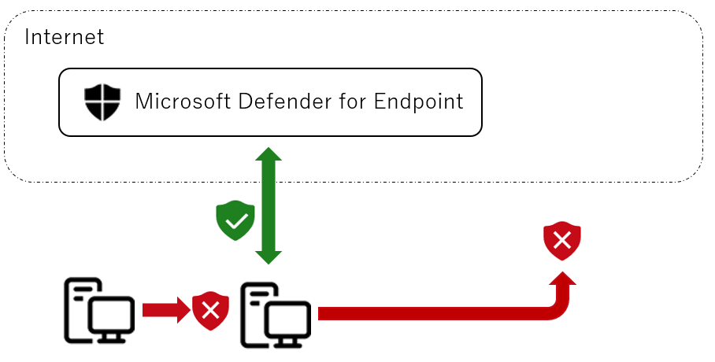
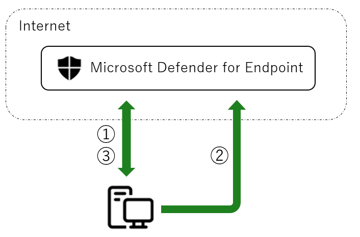
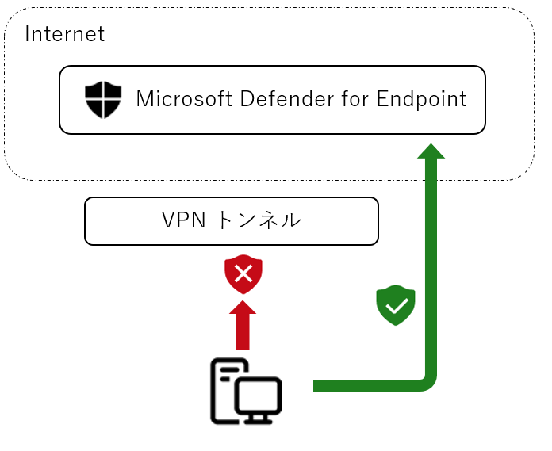

こんにちは Azure Security サポートチームです。
この記事では Microsoft Defender for Endpoint(MDE) のデバイス分離機能 を使用した環境でネットワーク隔離を解除できなくなる場合がある問題のトラブルシューティング方法ついて記載します。
※ 本記事の内容は 2023 年 5 月 2 日時点で最新の Windows 10 22H2 環境で動作確認を実施しています。
本記事の内容
デバイス分離機能とは
デバイス分離機能は、デバイスが侵害された可能性がある場合に、そのデバイスをネットワークから分離することでデータ流出や侵害の拡大を防ぐことができる Microsoft Defender for Endpoint(MDE) の機能です。
デバイス分離機能によるネットワーク隔離を実施すると、対象のデバイスはネットワークから論理的に切断され、 MDE サービスの稼働に必要な通信のみを行います。
また、本記事作成時点でサポートしているすべての Windows 10 および Windows 11 のデバイスでネットワーク隔離を実施する場合には、MDE サービスの稼働に必要な通信に加えて Outlook や Microsoft Teams、Skype for Business の利用する通信も許可する「選択的分離」機能を利用することも可能です。

参考情報：ネットワークからデバイスを分離する
デバイス分離機能の前提要件について
デバイス分離機能は、本記事作成時点(2023 年 5 月 2 日)では、デバイス分離機能は Windows および Linux マシンでサポートされています。
※ Linux マシンのデバイス分離機能は本記事作成時点ではパブリックプレビューとして提供しています。
また、macOS はデバイス分離機能がサポートされておりませんが、Live Response 機能 にてネットワーク分離のアクションを実行できます。
デバイス分離機能の最新のサポート状況や詳細な要件については以下の公開情報を参照してください。
参考情報：ネットワークからデバイスを分離する
デバイス分離機能のしくみ
デバイス分離機能による端末のネットワーク分離は以下のステップで実施されます。

管理者の操作もしくはカスタム検出ルールなどによってデバイス分離が実行されると、MDE のサービスは対象の端末と通信を行い、ネットワーク分離を行います(通信 ①)
MDE サービスは端末から連携される情報を元に、端末でデバイス分離が正常に完了したかどうか特定します(通信 ②)
MDE サービス側に情報が連携されると、Microsoft 365 Defender ポータル上にて [分離から解放する] ボタンを操作できるようになります。
管理者が端末のネットワーク分離を解除すると、MDE のサービスは対象の端末と通信を行い、ネットワーク分離を解除します(通信 ③)
デバイス分離時の注意点
デバイス分離を行うと、MDE のサービスが使用する特定のプロセスと宛先以外の通信が拒否されます。
そのため、リモートデスクトップや SSH によるリモート接続ができなくなる点に注意します。
また、前述の通り、端末のネットワーク分離を解除するためには、MDE サービスと端末間の通信を確保する必要があります。
しかし、例えば端末のすべての通信が VPN トンネルを経由するように構成されている場合には、デバイス分離後に MDE サービスとの通信に失敗するようになり、ネットワーク分離の解除ができない問題が発生する点に注意します。
そのため、VPN 通信を行う環境で MDE のデバイス分離機能を利用する場合には、スプリットトンネリング VPN により、MDE が利用する通信先に端末が直接接続可能な構成とすることを推奨しています。

MDE が使用する通信先については、以下リンク先からダウンロード可能な [商用顧客向けの Microsoft Defender for Endpoint の URL リスト] にてご案内しております。
参考情報：商用顧客向けの Microsoft Defender for Endpoint の URL リスト
デバイスの分離後に解除が行えない場合のトラブルシューティング
問題が発生する主な原因
デバイス分離の実施後、[デバイスを分離] ボタンがグレーアウトしたままになり [分離から解放する] ボタンが表示されない問題や、[分離から解放する] 操作を行ったものの端末のネットワーク分離が解除されない問題が発生する場合があります。
このような問題は通常、何らかの理由で デバイス分離機能のしくみ に記載の [通信 ②] および [通信 ③] に失敗している場合に発生します。
問題の解消のためには、ネットワーク分離された端末と MDE サービスとの通信を確立する必要があるため、対象端末が起動しており、かつネットワークに接続可能な構成であることを確認します。
特に、デバイス分離時の注意点 に記載の通り、端末のすべての通信が VPN トンネルを経由するように構成されている場合にも、ネットワーク分離後に MDE サービスとの通信に失敗する場合があります。
問題の解消方法
ネットワーク分離した端末が MDE サービスに接続できる通信経路を確保いただくことで問題が解消し、デバイス分離からの解放を実施できるようになります。
MDE サービスの通信先については、以下リンク先からダウンロード可能な [商用顧客向けの Microsoft Defender for Endpoint の URL リスト] を参照します。
参考情報：商用顧客向けの Microsoft Defender for Endpoint の URL リスト
ご利用環境が完全な VPN トンネルを構成している場合には、上記の通信先のみ VPN トンネルを経由しないように構成を変更するか、上記の通信先に直接通信できるよう、端末の接続するネットワークを追加・もしくは変更します。
※ MDE サービスに接続できる通信経路を確保したにも関わらず問題が解消されない場合は、 OS の再起動をお試しください。
デバイスの分離後に解除ができない問題が継続する場合
デバイスの分離後に解除が行えない問題が継続する場合は、弊社サポート窓口までお問い合わせください。
その際、サポート担当者から [MDEClientAnalyzer.cmd -i] コマンドにより、ネットワーク関連の問題のトラブルシューティングに役立つ情報の採取をお願いする場合があります。
MDEClientAnalyzer による情報採取の詳細については以下にてご案内しております。